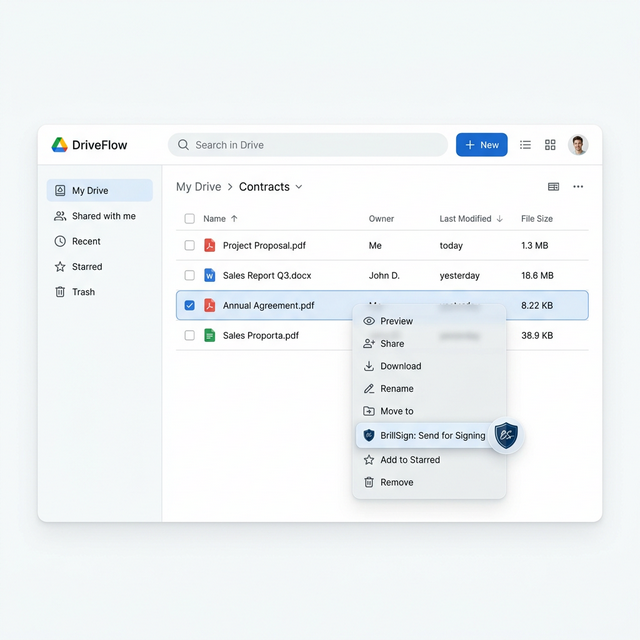
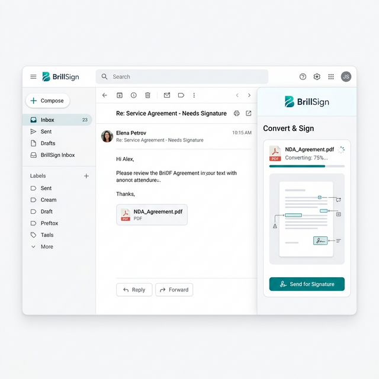
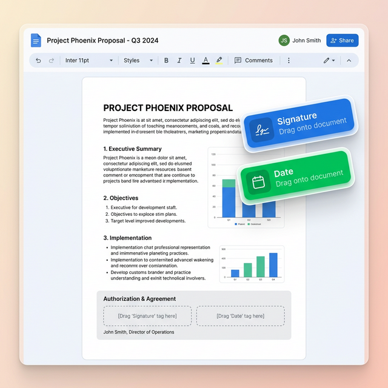

Sign from Drive, Gmail, or Docs —
Instantly.
BrillSign lives inside Google Workspace. Right-click a Drive file, hit Send for Signing — and the signed doc auto-saves back to Drive the moment it's complete. No downloads, no uploads, no switching tools.
True Native Integration.
No Workarounds.
Most "integrations" just dump files into a folder. BrillSign actually embeds the signing experience directly inside your Google Workspace.
Right-Click to Request Signatures
Our native Drive add-on embeds perfectly into your Workspace. Stop downloading files just to upload them to a signing portal. Simply right-click any document, select "Send for Signing," and BrillSign takes over.
- Auto-converts Docs & Slides to PDF
- Completed files save back to the identical origin folder

Transform Attachments into Contracts
Negotiating over email? When it's time to sign, open the BrillSign Gmail sidebar to instantly convert conversational attachments into formal, legally binding documents.
You can track the live status of the document seamlessly alongside your email thread—meaning you never lose the context of the deal.

Draft & Embed Logic Naturally
Draft your master service agreements natively in Google Docs. By applying our specific "Tags," you define exactly where signatures and dates should go while composing the document.
When you initiate the signing process, BrillSign intelligently parses the document, creating a flawless zero-knowledge digital envelope.

From Drive File to Signed Doc in 3 Clicks.
Right-click in Drive
Select any file in Google Drive and click "Send for Signing" from the context menu.
Signers Sign On Any Device
Signers receive a branded email. They sign on desktop or mobile with no BrillSign account needed.
Signed Doc Saved to Drive
The completed document auto-saves back to Drive. You get a notification in Gmail. No action needed.
Install from Google Workspace Marketplace.
Enterprise-ready controls for Google Administrators. Deploy domain-wide in 3 minutes.
Install via Marketplace
Search "BrillSign" in the Google Workspace Marketplace. Admins can deploy to specific OUs or domain-wide.
Minimal OAuth Scopes
We only request API scopes limited strictly to processing the files you designate. Zero-knowledge extends to our API infrastructure.
Connect Administrator
Map your BrillSign organization to your Google Workspace directory to immediately sync user permissions.
Set Default Service Folders
Choose default Shared Drives where completed organizational contracts will be saved.
Google Workspace Questions
Yes. BrillSign works with both personal My Drive and Shared Drives. Signed documents save back to the same location as the source file, maintaining your team's folder structure.
PDF, Google Docs (auto-converted to PDF), DOCX, and PNG/JPG files can all be sent for signing directly from Drive. The conversion happens inside BrillSign's ZK environment.
Yes. Google Workspace admins can deploy BrillSign to all users from the Admin Console under Apps > Google Workspace Marketplace Apps, with no action required from individual users.
No. BrillSign's zero-knowledge architecture means your document content is encrypted client-side before leaving your device. BrillSign servers only process cryptographic proofs — never plaintext document content.
Ready to Sign from Google Workspace?
Install from the Google Workspace Marketplace and start signing in 2 minutes.